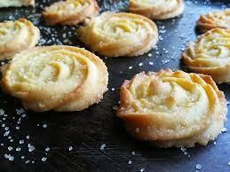
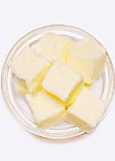
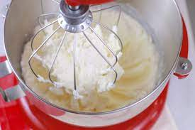
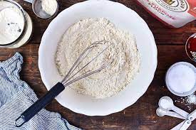
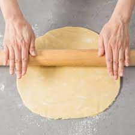
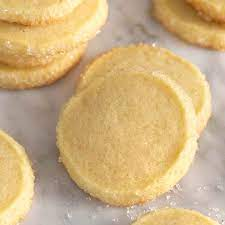

Butter Cookies

These crisp, delicious butter cookies have lots of amazing butter flavor and a melt in your mouth consistency that will have you coming back for more.
Ingredients
- . Measure the flour, use a scale if possible but, if
you don’t have one make sure to fluff your flour and spoon it into your measuring cup.
Add the room temperature butter to the bowl of your stand mixer.

- Cream the butter and sugar together until lighter in color and fluffy in consistency.

- Add the egg yolks and mix until fully combined.
- Add the flour and mix until just incorporated.

- Roll the cookie dough into a log and wrap in parchment paper or plastic wrap.
Chill for at least an hour. The dough can be frozen for two months or refrigerated for a week.
If frozen transfer to refrigerator to thaw for a few hours before using.

- Roll the chilled dough in sanding sugar (optional). Cut into slices and bake until just turning golden at edge.
